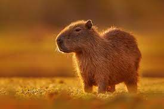

A capivara[3] ou capincho[4] (nome científico: Hydrochoerus hydrochaeris) é uma espécie de mamífero roedor da família Caviidae e subfamília Hydrochoerinae. Alguns autores consideram que deva ser classificada em uma família própria. Está incluída no mesmo grupo de roedores ao qual se classificam as pacas, cutias, os preás e o porquinho-da-índia. Ocorre por toda a América do Sul ao leste dos Andes em habitats associados a rios, lagos e pântanos, do nível do mar até 1 300 m de altitude. Extremamente adaptável, pode ocorrer em ambientes altamente alterados pelo ser humano. É o maior roedor do mundo, pesando até 91 kg e medindo até 1,2 m de comprimento e 60 cm de altura. A pelagem é densa, de cor avermelhada a marrom escuro. É possível distinguir os machos por conta da presença de uma glândula proeminente no focinho apesar de o dimorfismo sexual não ser aparente. Existe uma série de adaptações no sistema digestório à herbivoria, principalmente no ceco. Alcança a maturidade sexual com cerca de 1,5 ano de idade, e as fêmeas dão à luz geralmente a quatro filhotes por vez, pesando até 1,5 kg e já nascem com pelos e dentição permanente. Em cativeiro, pode viver até 12 anos de idade. Etimologia e nomes populares A capivara também é chamada de carpincho, capincho, beque, trombudo, caixa, cachapu, porco-capivara, cunum e cubu.[5] O nome capivara procede do termo tupi kapi'wara, que significa "comedor de capim".[6] Tal nome é o mais comum e conhecido por todo o Brasil.[5] No Rio Grande do Sul também é conhecida por capincho ou carpincho, termo derivado do espanhol.[5] No Amazonas, é conhecida por cupido e na Ilha de Marajó, no Pará, por beque. O macho, neste mesmo local, devido à glândula nasal no focinho, é chamado de trombudo, caixa ou cachapu.[5] Em alguns locais do interior da Bahia, a capivara é chamada de porco-capivara, no sudeste do Pará por cunum e de cubu em alguns locais do estado de Goiás.[5] Nomes indígenas Proto-Tucano[7]: *kuetju Proto-Nawiki[8]: *keeʦu Proto-Mamoré-Guaporé[9]: *uʧɨ Chiquitano[10] kürch Shawi[11]: tucusu' Irantxe[12]:pexí Proto-Jê[13]: *k(r)Vmtym’ Proto-Jê Meridional[14]: *kɾɯɡdɯɡ Kwazá[15]: jara Proto-Pano[16]: *ʔamɨ(n) Proto-Guahibo[17]: *húmo-ko-bi-to Taxonomia e evolução A capivara foi descrita pela primeira vez por George Marcgraf em 1648, como Capy-bara Brasiliensus: Porcus est fluvialitis ("porco dos rios").[5] No entanto, sua primeira classificação só foi oficialmente elaborada por Carolus Linnaeus, em 1758, junto com o porquinho-da-índia, como Mus porcellus.[5] Posteriormente, Linnaeus reclassificou a capivara entre os suínos, como Sus hydrochaeris.[5] Mathurin Jacques Brisson em 1762 classificou a capivara no gênero Hydrochoerus.[5] Visto que o trabalho de Brisson, Regnun Animale não seguiu a nomenclatura binomial adequadamente, tal nome não deveria ser considerado válido. Houve debate que o nome deveria ser Hydrochoeris, criado no trabalho Zoologiae Fundamenta por Brünnich, datado de 1772. Entretanto, dado seu largo uso, durante 230 anos, em 1998 o Bulletin of Zoological Nomenclature oficialmente reconheceu o gênero Hydrochoerus.[5] A última edição do Mammal Species of the World (2005) adotou o nome proposto por Brisson (Hydrochoerus).[5] Entretanto, os autores consideraram, incorretamente, que o nome Hidrochoeris foi o proposto por este autor.[1] Tal confusão foi resolvida na reimpressão do livro, mas não foi mudada na versão on-line.[5] A capivara é um roedor incluído na família Caviidae, subfamília Hydrochoerinae.[1] Tal subfamília foi considerada, por muito tempo, uma família separada (Hydrochoeridae), mas estudos genéticos claramente consideram que as capivaras devem ser incluídas em Caviidae, tornando Hydrochoeridae uma subfamília.[1] Alguns estudos apontam Kerodon (ao qual pertence as duas espécies de mocós) como o grupo de roedores mais próximo evolutivamente do gênero Hydrochoerus, apesar de que tal relação ainda não está bem resolvida.[18] Considerando a relação com o gênero Kerodon, pode ser válido considerar Hydrochoeridae como uma família.[18] Mas é inquestionável, até o momento, que a capivara é um roedor caviomorfo, dentro da superfamília Cavioidea, que representa uma importante radiação de roedores Hystricognathi no Novo Mundo, ao qual fazem parte as cutias, a mara, a paca, a pacarana, os preás e o porquinho-da-índia também.[19] Atualmente, não são reconhecidas subespécies da capivara.[20] Até 1991, alguns autores consideravam Hydrochoerus isthmius, que ocorre no Panamá, norte da Colômbia e Venezuela, como uma subespécie da capivara (Hydrochoerus hydracheris), mas é classificada como uma espécie separada desde esta data.[21] Registro fóssil Filogenia de Cavioidea.[22][19] Dasyproctidae - cutias Cuniculidae - paca Caviidae Caviinae - preás Dolichotinae Dolichotis Hydrochoerinae Hydrochoerus - capivaras Kerodon - mocós Filogenia inferida a partir de estudos citogenéticos e moleculares. Os registros mais antigos de capivaras datam do Mioceno, entre 7 e 9 milhões de anos atrás, da Argentina central.[18] De fato, a superfamília Cavioidea começou a se diversificar na Patagônia. Inicialmente, foram descritas quatro subfamílias de Hydrochoeridae, com um grande número de espécies e gêneros de capivaras pré-históricas descritas, mas atualmente, representada apenas por duas espécies.[18] A mais antiga espécie relacionada à capivara atual é Cardiatherium chasioense, que ocorreu onde hoje é a província de Buenos Aires, Argentina.[18] No Plioceno, entre 5,3 e 2,5 milhões de anos atrás, existiu o gênero Phugatherium, também próximo da atual capivara.[18] O gênero Hydrochoerus surgiu no fim do Plioceno na América do Sul, mas a mais antiga espécie conhecida é Hydrochoerus gaylordi, das Antilhas.[18] No fim do Pleistoceno, é provável que a atual capivara já ocorresse do sul da América do Norte até o centro da Argentina.[18] Essas espécies fósseis, assim com a atual, viviam em ambientes semiaquáticos.[18] Algumas espécies muito próximas da capivara atual, como as do gênero Chapalmatherium e Neochoerus, do Pleistoceno, eram particularmente grandes, podendo atingir 200 e 110 kg respectivamente.[18] Apesar disso, as espécies fósseis relacionadas à capivara possuíam características muito semelhantes (como a formação de manadas) à espécie moderna: aparentemente, tais características existem desde o fim do Mioceno.[18] Distribuição geográfica e habitat As capivaras habitam ambientes semi-aquáticos, como as várzeas de rios, incluindo áreas urbanas. A capivara é uma espécie amplamente distribuída na América do Sul, e ocorre em todos os países desse continente, exceto no Chile.[5] É encontrada a leste dos Andes até a foz do rio da Prata, na Argentina.[5] Apesar dessa ampla distribuição, ela é mais rara em alguns locais, com algumas extinções locais confirmadas, como em partes dos llanos da Venezuela e em várias regiões da Caatinga, no Brasil.[5] Também foi extinta em parte do litoral do Nordeste Brasileiro, entre o Rio Grande do Norte e o Ceará.[5] No Pleistoceno, ocorria até a América do Norte, no sul dos Estados Unidos.[23] Entretanto, a espécie está se tornando invasora na Flórida.[24][25] Ao longo desses locais, habita uma ampla variedade de habitats ao longo de rios, lagos, represas e pântanos.[20] É abundante em florestas de galeria e áreas periodicamente inundáveis. Sua presença tem sido reportada desde o nível do mar até 1 300 m de altitude.[20] No Brasil, é abundante nas bacias dos rios Amazonas, Paraná e Araguaia; no Pantanal e nas regiões dos lagos no Rio Grande do Sul.[5] É um animal adaptável e pode ser encontrada em inúmeros ambientes altamente alterados pelo homem, principalmente em pastagens e canaviais.[26] Pode alcançar altas densidades nesse locais se não caçada, sendo considerada uma praga em algumas ocasiões. É possível que o desmatamento para criação de pastagens possa ter favorecido a expansão da ocorrência da capivara em alguns locais.[26] Frequentemente, pode ser encontrada em áreas urbanas, parques e até mesmo, áreas residenciais.[5]
